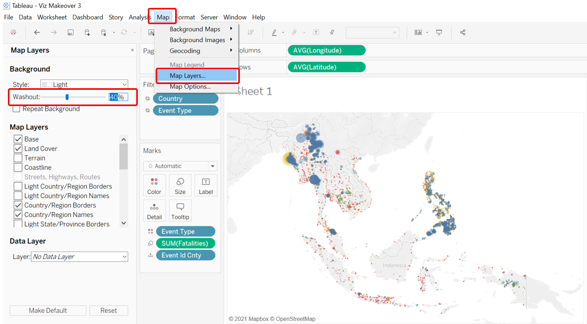
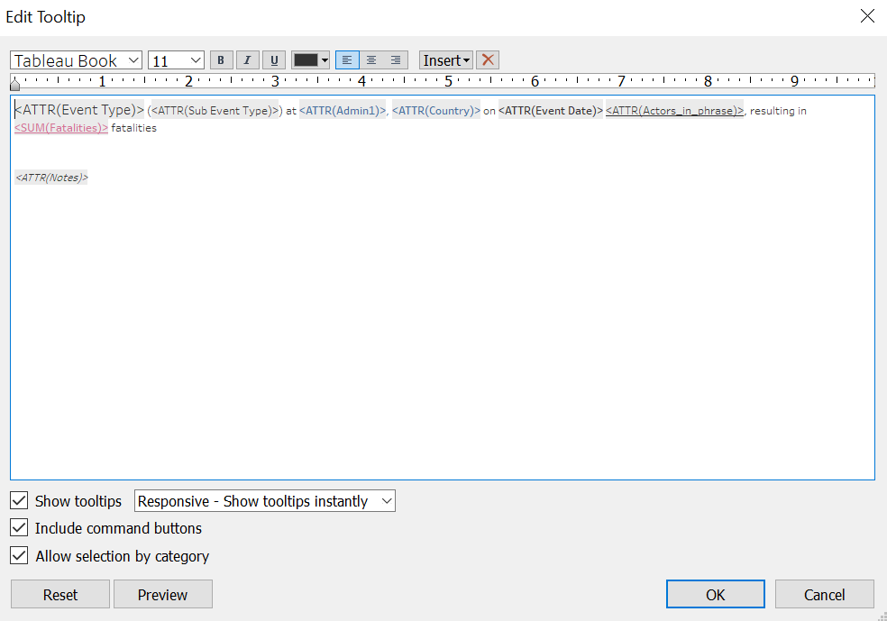
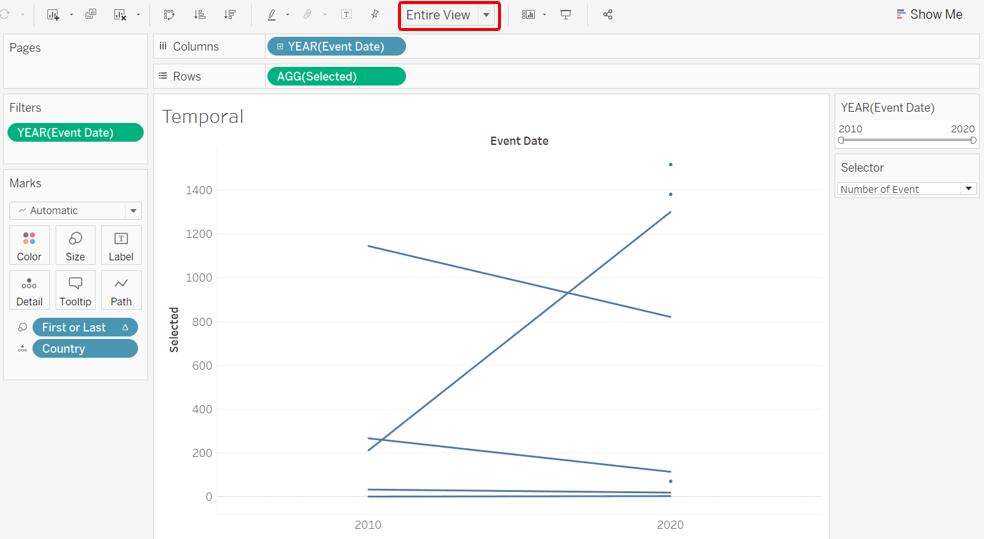
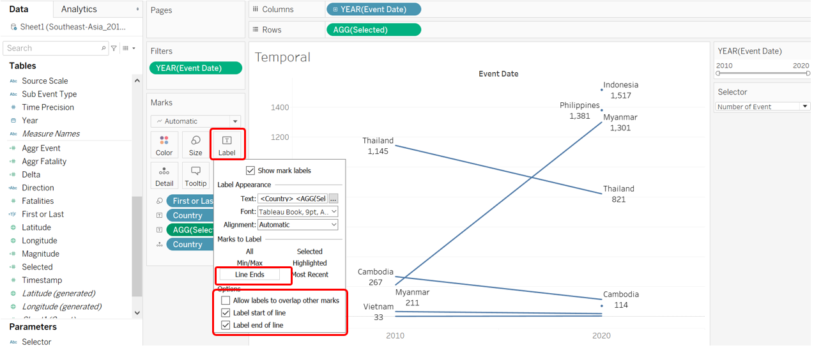
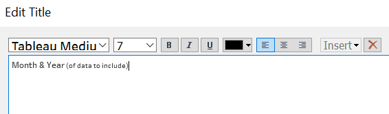

The original visualization using the data available is appended below:

Section A: Critique of Original Viz
This section provides a critique of the original visualization and comments on both clarity and aesthetic aspects that could be further improved on. A total of 10 clarity issues and 8 aesthetic issues were identified.
Clarity
| S/N | Issue | Comments |
|---|---|---|
| 1 | Cluttered Opaque Dots | This is both an aesthetic and clarity issue - dots overlapping covers other underlying dots that may be overlooked as the dots appear to be 100% opaque, this means useful information is lost, and may even mislead viewers into thinking there are lesser conflicts than really were |
| 2 | Missing Magnitude of Impact | While each dot represents one conflict event, not all events are of equal impact. A peaceful protest would likely have lesser impact in the form of lives lost than a battle, but even this is not always the case. It would be useful to also visualize the number of fatalities on the map to get a sense of the deadliness of the event. |
| 3 | Year of Event | While the geospatial map plotted out the conflict locations, it does not offer the option to zoom in to individual year to see how situation developed through the years |
| 4 | Titles | Titles for both the viz and the legend are accurate, which is commendable. However, more information could be provided (e.g. clarify how many events do each dot represents on the map; what is the unit of measure for the time series viz |
| 5 | Confusing Repeated Color | Both the geospatial map and the time series viz uses the same shade of blue, together with the fact that the legend was placed beside the time series viz, at first glance, it appears as if the time series is only plotting changes for Battles events, which are denoted by the same shade of blue on the map. |
| 6 | Axes for Time Series Viz | It is unclear what “Count of Sheet1” is referring to - what exactly is the count for and what is ‘Sheet1’? |
| 7 | Inconsistent Y-Axis scale | The Temporal viz in the trellis panes also differ from each other: from the counts for Battles from around 400 to 700 to the counts for Riots lesser than 20, they all look similar in scale. The changes are also exaggerated for those in smaller scales, distorting a realistic sense of comparison |
| 8 | Non-Informative Viz | The time series viz, in itself, does not provide any informative insights, other than the actual changes in the count of each types of conflict event. There is no clear patterns or trends observed in the trellis view, and with the inconsistent Y-Axis, we cannot even formulate meaningful comparison between the event counts or comment much about the trends (since events with smaller counts would have flatter lines with more minute changes if the scales are aligned) |
| 9 | Tooltip | Tooltip was left as default without proper phrasing and explanation on the values of the variables. Which does not help with enhancing the clarity of the two visualizations (viewers would not have very applicable use of the longitude and latitude information provided, for example). |
| 10 | Source of Data | The source of data is mysteriously missing. This reduces the reliability of the data used (and could also get the viz producer into trouble, given the terms-and-condition for use of the data from ACLED) |
Aesthetic
| S/N | Issue | Comments |
|---|---|---|
| 1 | Cluttered Opaque Dots | As mentioned earlier, this is both an aesthetic and clarity issue; apart from the lack of clarity, the cluttered dots also made it visually annoying when some dots are partially or fully hidden and it is difficult to pinpoint the exact event even when we attempt to hover over |
| 2 | Map Background | Dark background for the land masses makes it less contrasting with the dots and the boundary lines |
| 3 | Legend for Map | While the color scheme is meant for the geospatial map, it is placed far away, separated by the time series viz. Beyond confusing, it also requires viewers’ eyes to track across the time series viz to see what color on the map corresponds to what event on the legend - viewers may even get distracted while doing that, or worse, frustrated. |
| 4 | Y-Axis for Temporal Viz | Other than the fact that the inconsistent Y-Axiss distort the sense of comparison, it is also ugly when there are different “gaps” between the tick marks. More critically, the repeated “Count of Sheet1” in itself is redundant, it could have been combined together as one. And lastly, the orientation of the “Count of Sheet1” means viewers have to tilt their head to read it - not as user friendly. |
| 5 | Lack of Grid Lines | There is also a lack of vertical grid lines to help guide viewers to map the count values to the year. |
| 6 | X-Axis Abruptly Cut-Off | X-Axis of the time series viz is cut-off at the end, with the year ‘2020’ appearing chopped up. |
| 7 | Lack of Interactivity | Other than the toggling of Country, the viz does not allow changing other variables such as Actors involved or the type of conflict event. |
| 8 | Proportion of the Visualizations | The geospatial map takes up half the canvas, whereas the temporal viz had to share real estate with the legend and filter - this makes the overall visualization appear lopsided. |
Section B: Suggested Improvement
This section provides some suggested improvements that could be implemented to resolve issues discussed in Section A.
Clarity
Clarity
| S/N | Issue | Suggested Improvement |
|---|---|---|
| 1 | Cluttered Opaque Dots | Increase the alpha / Decrease the opacity of the dots, so as to allow overlapped dots to be visible |
| 2 | Missing Magnitude of Impact | Incorporate the Fatalities numbers as one of the variables in the visualization. In this case, it will be a multiple-variable visualization, where dot can continue to represent one event count, color as the event type, and size as the deadliness / number of fatalities |
| 3 | Year of Event | Create additional filters to allow toggling of year. In fact, to better visualize changes, animation may be considered. |
| 4 | Titles | Include subtitles to better inform viewers of the visualization that they are looking at, especially key critical information, such as what each dot on the map represents. |
| 5 | Confusing Repeated Color | Avoid using repeated color to represent elements of totally different nature to prevent unnecessary confusion. |
| 6 | Axes for Time Series Viz | Provide clear axes title to make sure viewers are able to identify with the data being presented. Unit of measure should also be specified if need be. |
| 7 | Inconsistent Y-Axis scale | Axes in trellis panes should be consistent as much as possible to aid comparison. If not possible, alternative presentation approaches should be explored |
| 8 | Non-Informative Viz | The trellis pane viz does not have any value-add in the story told - perhaps a simple get-around is to just put all the different types in on continuous axis and differentiate the lines by different colors (consistent with what is on the map). However, authors should be mindful of the story they are interested to tell - if the changes within two particular years are not important to the viewer (i.e. how the lines change), having many kinks in the line creates more confusion. In this case, since conflict events are more ad-hoc in nature, it is more likely for viewers to be interested to know how the numbers changed from one timeframe to another (e.g. 2010 to 2020), instead of all the changes in between. A slopegraph would provide that clearer picture without additional encumbrances. If user really wants to, an option to change the start and end year may be provided to allow users to toggle between the start and end timeframe that they wish to look at. |
| 9 | Tooltip | Tooltip provides a good opportunity to better inform viewers of the story behind each data point, and should be put to good use. |
| 10 | Source of Data | Include a source note to credit data owner! |
Aesthetic
| S/N | Issue | Suggested Improvements |
|---|---|---|
| 1 | Cluttered Opaque Dots | Increase the alpha / Decrease the opacity of the dots, so as to allow overlapped dots to be visible |
| 2 | Map Background | Reduce the washout of the background map |
| 3 | Legend for Map | Place legends where they are easy to be referred by viewers. Legends are meant to enlighten, not create more confusion. |
| 4 | Y-Axis for Temporal Viz | Make sure axes are consistent and tick marks evenly spaced out. Titles should also be horizontally oriented to reduce the need for uncomfortable head-tilts |
| 5 | Lack of Grid Lines | If need be, grid lines or point dots should be provided to guide viewers track the data points along the x and y axes. |
| 6 | X-Axis Abruptly Cut-Off | Make sure axes marks are properly spaced out and visible; if needed, ensure flexibility is incorporated to allow viewers to change the size according to the size of their screen (in Tableau, change the view to “Entire View”). |
| 7 | Lack of Interactivity | Include other variables as filters/parameters to better aid users/viewers decipher and gain insights from the visualization |
| 8 | Proportion of the Visualizations | Ensure real estate of the dashboard is maximized and visualizations are evenly-spaced and proportionate to one another |
Discussion on Geospatial Visualization
There are several commonly-used geospatial visualization techniques available, these include Cartograms, Choropleth maps, Proportional Symbols, and Dot Density Maps. The original viz adopted the latter technique. Amongst them, the former (Cartograms) is the least popular, as “their use if oten more for their thratrical value (i.e. to grab the attention of an audience) and less for their ability to help folks understand subtle details of geographic datasets”
The dot density maps is useful in showing “diferences in georaphic distributions across a landscape”. In the original viz, a one-to-one dot densioty map (one dot represents one count) is used. The dot density map has the following advantages:-
- raw data and simple counts or rates/ratio can all be mapped (as opposed to Choropleth maps which requires the latter)
- data need not be tied to enumeration units (that is, it does not require the variable of interest to be conceptually measurable anywhere in space)
- it works fine with black and white when color is not an option (and if color is available, it can be used to represent other variable of interest)
Points 1 and 2 are particularly important considerations in the context of our visualization - to visualize incidence of conflict events, further processing of the data (e.g. divide it by the population) would be required in order to adopt the Choropleth technique. Point 3 is an added bonus (given that Tableau has color functions available), since a Choropleth will rely on colors to represent the incidence of conflict event (in this case, potentially event per population), it loses the option to add on another dimension that a dot density map allows using color. In this case, one plausible measure to include, is the type of conflict event. In this case, each dot not only tells us that a conflict occur, but can very intuitively inform us whether it is a protest or a battle.
In fact, proportional symbols may be added onto the dot density map (in fact, it is also possible to add proportional symbols on Choropleth maps - but that is, at this juncture, besides the point). Size of each dot can also be varied to represent another added dimension - one interesting variable is “Fatality”, which allows viewers to appreciate the deadliness of each of the event. With the combination of the size and color use, it is also possible to spot types of events that generally lead to more fatalities (i.e. bigger dots) and whether they concentrate in particular regions/countries. One limitation of proportional symbol, though, is that it could lead to congestion on the map; however, it is a small issue and worthy trade-off for the added information. In fact, increasing the transparency could help alleviate part of the problem Another shortcoming is that readers generally do not estimate the areas of symbols very well - however, for the purpose of this visualization, the sizes are to give general sense of fatalities, especially between different event types, extraction of actual numbers are secondary, and can be complemented by incorporation of useful Tooltips.
In parallel, this is also one major limitation of dot density maps - they are terrible for retrieving numbers from the map, people are generally not patient in manually counting the number of dots in a region to derive the total number of events in the particular region. Similarly, the purpose of the visualization is to give a broad overview of the concentration of a particular conflict type geographically, to extract further detail, useful Tooltips would need to be added. To extract the total number of conflict in the country for the selected years, a complementary viz would be needed (see Discussion on Visualizing Changes below).
In conclusion, a dot density map with each dot representing one event, the color of the dot representing the event type, and the size of the dot representing the number of fatalities, with appropriate filters for users to toggle would serve the visualization objective of this makeover.
Further Discussion on Animating Changes on Geospatial Visualization
According to Daassi, Nigay & Fauvet (2005), Ed Chi’s Visualization Process are structured into four steps, “namely: (1) data, (2) point of view of the data, (3) visualization space and (4) point of view on the visualization space.” Temporal data visualization can be classified based on the different anchoring points between the visualization processes of the temporal domain (i.e. the time element), and the structural domain (i.e. the factor/variable that we are interested in). Hence, the author’s taxonomy are categorised into four main groups, based on the anchoring point between the temporal and structural domains at the four different steps as described at the start of this paragraph. The authors, however, does not explicitly discuss the merits and shortcomings of each of these visualization frames.
The authors, however, did provided a further discussion on the difference between static and dynamic techniques. Dynamic techniques, as defined by the authors, have visual representation that changes automatically, and animation is frequently used to visualize spatio-temporal data. Static techniques, on the other hand, does not change automatically over time. The author of this makeover explored both the static and dynamic techniques with the existing data on hand.
In the exploration of the two models, one trade-off became apparent: dynamic animation allows for viewers to appreciate the shifts in patterns (in this case, location and deadliness of conflict events) without the need for manual toggling; however, in exchange, viewers surrender the autonomy to explore the data on their own terms. In the context of the subject ACLED dataset, with the Year set as the animating factor (i.e. for the viz to dynamically move forward through the years), viewers will not have the option to view the distribution for other time period beyond the yearly frame. In the context of conflict that can drag on through different years and for length of more than years (or decades, for the matter), having the temporal frame fixed at one calendar year may compromise on contextual nuances.
Furthermore, the benefit to having the changes dynamically animated is not strong in the context of conflict events, which occurrences are more ad hoc in nature than other events, such as child mortality or basic education, where changes in their rates are more meaningfully tracked through its temporal progression. In contrast, conflict events are more “opportunistic” - indeed, they may increase or decrease through particular periods of interest, but these are consequently also periods of particular interest - it is unlikely for people to be interested in knowing the number of conflict events in Singapore between 2010 to 2020 simply because it is not a period of any particular interest. Conversely, it is interesting to know the number of conflict events, say, in the Phiippines from Jun 2016, when President Rodrigo Duterte assumed office and declared its “war on drgs” - this is a particular period because it is of particular interest (versus infant mortality rate or education rate, which is more actively tracked and hence the changes year-on-year is more meaningfully analysed).
All in all, the costs to having a dynamic visualization in this context heavily outweighs its benefits. While the author has made an attempt to incorporate an animated dynamic visualization, the eventual decision is for the dynamic model with appropriate filters that allow users to toggle for the time period that they wish to examine freely to be adopted.
Discussion on Visualizing Changes
Temporal plots are aplenty. Candlestick charts, Sunburst diagram, Horizon graph, Calendar Heatmap, or even the Animated Bubble Plot made famous by the Gapminder foundation and Hans Roslings in what is now his classic TED talk, are all examples of temporal plots that data scientists use to visualize change.
One of the most commonly used ones, though, is the line chart that we see in the original visualization. Such line charts are useful to depict seasonal, cyclical, outliers or even co-variation between different series. While the line charts are useful, it does become visually complicated when there are several lines altogether (and if the lines are separated by different panels and axes, it creates other problems such as those discussed in our critque of the original viz). When minor variations between two time periods are not of major concerns or interests, it may be beneficial to remove the complexity by visualizing only the general trend of the series without the volatility within.
Animation come easily to mind when talking about visualizing changes and depicting trends - recall the immortalized story of countries around the world escaping short-lives and poor health as we progress altogether on the income scale. However, as discussed in the section above, they are not without their shortcomings. In fact, one added “inadequacy” of a, say, Gapminder-style animated bubble plot a la Hans Rosling, is the fact that we are not comparing the change in one variable with another along time (i.e. bivariate temporal relationship) - for the purpose of this dataset, we are really interested in only an univariate temporal relationship of the count or fatality of conflict events with time. This is further vindicated by the earlier conclusion we had drawn on the fact that conflict events are more random and ad-hoc in nature, as compared to, for example, infant mortality or education rates.
Another feasible and even simpler method is Slopegraphs. Edmund Tufte explains that Slopegraphs “compare changes usually over time for a list of nouns located on an ordinal or interval scale”. Tufte argues that the advantages of Slopegraphs are as follows:-
- the two columns allows easy reference on how numbers in general have changed over the years;
- the paired comparison allows readers to read down each line to identify how the variable has changed for each of the category/“noun” (in the case of this data set - each country). With added labels, the number associated with each of the nouns is also visibly displayed;
- it shows how two “nouns” (i.e. countries) differ in their rates of change;
- unusualy slope stands out from the overall patterns; and
- most importantly, the information is both integrated through the connected contents, and separated in that “the eyes follows deveral different and uncluttered paths in looking over the data”. He argues that this allows organization of complex information hierarchically.
In addition to the above, there is also very minimal (in fact, zero!) non-data ink involved.
Tufte’s use of Slopegraph first came about in 1983, in his book The Visual Display of Quantitative Information. Andy Kirk, in 2013, agrees with Tufte, concurring that slopegraph is the “best way to visually expose the big stories” between two contrasting time period, with Ben Jones adding on shortly after, providing a how-to tutorial, for which some of the methods used in this visualization were referenced from.
Charlie Park, in his posts on 11 July 2011, provided yet a very comprehensive list of various slopegraph-like visualization from the past, and compared them with other alternatives - in summary, his key points were that slope graphs are more layman-friendly than scatter plots and slopes are much easier to read, but caution must be given to use the same data type and units of measurement for both the left and and right sides, lest any force-ranking creates “meaning where there might not actually be any” (and hence misleads viewers). He ended off with a guide on when to use slopegraph - Basically: Any time you’d use a line chart to show a progression of univariate data among multiple actors over time, you might have a good candidate for a slopegraph. - this is exactly the situation we have here on hand!
Park then followed up with another post with a discussion on other examples of Slopegraphs and related types of visualization. One example is the Whiskerslopes, that includes a “revised box plot” on each axis. The added lines could better highlight the oddball values especially in dataset with large changes between the years as a whole; in the context of our visualization, however, the small number of countries plus the fact that the general shift in numbers are less systemic, it is less applicable and may add unnecessarily confusing non-data ink. Park also further added more best practices for the creation and visualization of Slopegraphs, which were taken into consideration and adopted where feasible by the author of this makeover.
Makeover Concept
Taking in the points discussed above, a redesigned visualization could look like the following:
Addressing Clarity Issue
| S/N | Issue | Ways in which proposed viz resolve issues identified |
|---|---|---|
| 1 | ||
| 2 | ||
| 3 | ||
| 4 | ||
| 5 |
Addressing Aethetic Issue
| S/N | Issue | Ways in which proposed viz resolve issues identified |
|---|---|---|
| 1 | ||
| 2 | ||
| 3 | ||
| 4 | ||
| 5 |
Section C: Redesigned Visualization
Using Tableau, the redesigned visualization based on the discussion points and concept presented in Section B above is created as follows:
The redesigned visualization can also be accessed via this link
Section D: Step-by-Step for Viz Makeover
This section provides a step-by-step guide to recreate the redesgined visualization.
Part 1 - Data Preparation
Step 1 - Importing Data
After downloading the Southeast Asian 2010-2020 dataset, open up Tableau Desktop then drag-and-drop the downloaded Excel file onto a new tableau main page.

We can leave most of the data as-is, since they are relatively clean. We proceed to open up a new Worksheet in Tableau. Once that is done, we will quickly realise that Tableau automatically classified many of the numerical variables as Measures. We will need to shift these to become Dimensions. click on the following Measures while holding down the Ctrl key:-
- Event Id No Cnty
- Geo Precision
- Inter1
- Inter2
- Interaction
- ISO
- Time Precision
These variables are shifted to Dimension as their numerical values are codes representative of something and their numbers do not have any ordinal or nominal value.

Part 2 - Creating Interactive Geospatial Dot Density Plot with Proportional Symbols
Step 2.1 - Base Map
The very first step to creating a geospatial visualization is to create a base map. The dataset conveniently came along with Longitudinal and Latitudinal data to map out where each of the conflict event happened; Tableau on the other hand, made it even easier by automatically recognizing that these variables have geographical role and assigned them to their correct lat-long meaning based on their name. We now drag the Longitude to Columns, and Latitude to Rows.

Step 2.2 - Basic Dot Density Map
We create a basic dot density map by drag-and-dropping “Event Id Cnty”onto the Detail tab. As with any one-to-one dot density map, each of the resulting dot represents one count of the variable - in this case, a conflict event. We further enhance the map by introducing another variable - “Event Type” - onto the Color tab. This added dimension allows viewers to identify the type of event (e.g. Battle, Protest, Riot) associated with each event.
Step 2.3 - Proportional Symbols
Knowing the type of events and their concentration in a particular geo-spatial location is informative - however, not all events are of equal concerns: while some of the dots denotes relatively “civilized” encounters (e.g. peaceful protests, arrests of key politicians without any casualties involved), some are way more violent (e.g. battles, explosions). In this aspect, the dataset provides an appropriate variable - the number of Fatalities. To show the relative impact of each event proxied by the number of people killed during the event, we drag-and-drop the measure Fatalities onto the Size tab - the size of each dot would then provide the relative destruction (in human-life terms) of each event: the bigger the circle, the more lives the event claimed (and hence more impactful), and the smaller the inverse, the lesser the impact.
We do note that the circles are still relatively similar in size, and they are all very close together such that we are unable to distinguish dots that are overlapping. We do two further changes to enhance the dots’ appearance:
First we enlarge the circle by first clicking on the Size tab, then sliding the slider to the right.

Next, we reduce the opacity by first clicking on the Color tab, then change the Opacity to 50%.
Step 2.4 - Interactivity - Filters
Country
Notice that we have also included Country as a Filter (by drag-and-dropping the Country pill into the Filters tab) at this point, which will be useful later on (remember to click on the small triangle beside the blue Country pill in the Filter tab, then check “Show Filter” for the filter to appear on the right-hand pane).
Event Type
We do the same to “Event Type”. Then we change both of these filters into Single Value (Dropdown) list.

Actors
We also want to create a filter based on the interacting actors. To achieve this, we first have to create a few intermediate variables. First, we create a new string field called Inter1_recoded that spells out what each of the coded number in Inter1 means

We do likewise for Inter2 to create Inter2_recoded.

Lastly, we string these two variables together to create variable Actors that tells us the pair of actors in each conflict

Similarly. we then drag-and-drop the Actors variable onto the Filter pane and change the type to Single Value (Dropdown).
Step 2.5 - Aesthetics
Map Background
We next work on the aesthetics of the viz. First, the map background. While the default background is alreayd using the Light style, the background can be further faded to enhance the contrast between the various dots and the landmasses. This can be done by first clicking on the Map option on the options bar at the top, then selecting “Map Layers…” from the drop-down list. At the washout option, change the percentage to 40%.

Title
Next, we double click on the title to change it to the following.
Step 2.6 - Tooltip
We want viewers to be able to extract more information when they hover their mouse over - so we add in a customized Tooltip that can provide them just that.
First, we create a new field that forms proper phrases with the parties involved - “Actors_in_phrase”.

When there are no second actor, the variable will just return that an event was conducted “by
When the second actor is either civilians or protesters, it means someone had done something to these people, and hence, “by
And finally, when there are two non-civilian non-protesters actors (e.g. State Forces and Rebel Groups), the events are conducted by these two actors jointly
Once that is done, we drag-and-drop the relevant fields into the Tooltip tab - for this Tooltip, we will need the following variables:
- Actors_in_phrase
- Admin1
- Country
- Event Type
- Notes
- Sub Event Type
And lastly, we double click on the Tooltip tab, retain the relevant variables, and edit the Tooltip as follows:

We now have an informative geospatial dot density map of conflict events with proportional representation of the fatalities.
If reader is interested, steps to include Animation on the map for dynamic visualization - which is not recommended for the purpose of this dataset - is documented in the Annex
Part 3 - Visualizing Change using Slopegraph
We next open up a new Worksheet to create the second portion of the overall viz visualizing change using the Slopegraph.
Step 3.1 - Data Preparation & Variable Creation
As usual, before we dive straight into creating the viz, we will do some data wrangling and create some useful variables first.
Year
By default, the Year variable is of numeric dimension type, we will first need to change it to the proper Date type.

Aggregating Events
Next, we create a variable that counts the number of events. Without any further specification to the formula, Tableau will include data entry for the count according to the filters applied.

Aggregating Fatalities
We also create another similar variable, this time round to sum up the fatalities
Selector
We have two types of change that we can visualize - number of events and number of fatalities. We want to allow viewers to be able to toggle between these two variables to distill relevant insights. We do that by creating a Parameter. Parameters can be created by right-clicking the blank space under the Data tab on the left-most panel and selecting the “Create Parameters…” option. We call this Parameter Conflict Event or Fatalities, taking in String data type with the following list of values:

After that, we create a variable called Selected that takes in the option selected by the viewers via the parameter:

Delta & Direction
We create a variable Delta that informs us on the change in the numbers (positive if increase, negative if decreased).

We then use Delta to find out the direction of movement of the numbers of conflict event/fatalities between any two years by creating the following Direction variable
First or Last
Finally, we create a variable called First or Last - this variable will be useful in allow us to show a line on the Slopegraph for only the starting and ending year; where either one is missing, the data point will only appear as a dot.

Step 3.2 - Creating Basic Slopegraph
To create a basic Slopegraph, drag-and-drop the Event Date dimension to Columns, the Selected variable (that takes in user selection of either number of fatalities or events) into Rows, and Country into the Detail tab.

But wait… this looks like a normal line graph and not slope graph! Recall earlier we mentioned the need to include the First or Last variable, now is the time. We drag-and-drop it onto the Size tab.
Next, we go to the right hand panel where we find the “AGG(First or Last)” distribution pane; we right-click on the False legend, and select “Hide”
This way, we should see the lines taking shape, with only two columns, one for the starting year, and one the ending. With this, we would also want viewers to be able to change the start and end year.
Step 3.3 - Time Filter
And that brings us to the creation of a Time filter.
We first drag-and-drop the Event Date variable onto the Filter pane. A pop-up will appear - we select “Years” from the option list (this is just for place-holding, we will change it to month later below, with explanations)
Followed by checking the “Use all” option under the General tab, then click Ok.
We notice that the Year pill under the Filter pane is a dimension (blue pill). We click on the small triangle at the right-end of the blue pill, a list will pop up - we then select the date Month option as shown. Recall in earlier discussion in Section B, there is a need for more specific temporal filter to analyze changes for particular period of interest (e.g. from June 2016 onwards in the Philippines for President Duderte’s term), hence, while we change the filter date type, we also change to allow more in-depth, per-month analysis (instead of leaving it as Year). The pill should turn green in color.
A window will pop up, and we select the “Range of dates” option, leaving all the other settings unchanged.
Lastly, we click on the triangle at the right-end of the pill (this time green) again - check on “Show Filter”
Step 3.4 - Aesthetic Enhancement
Entire View
First thing first, we change the view to “Entire View”

Chart Labels
Next, we add in labels on both end of the line to enhance clarity. We click on the Label tab, then select “Line Ends” as the option (see below), unchecking the “Allow labels to overlap other marks” option, and make sure the option for both “Label start of line” and “Label end of line” are checked.

We also want to edit the label to let the country and numbers be in one line

Direction
We make use of colors to make the direction of change more obvious. Drag-and-drop the Direction variable into the Color tab
Double-click on the AGG(Direction) legend pane to edit the color - we want blue to denote decrease (since decrease in conflict event or fatality is good), while red to denote increase in the unfortunate numbers. We select the Blue-Red-Brown palette, then make the appropriate changes. “Not Applicable” in this case denotes countries where either the start or the end year data is not found (and hence we cannot visualize the change between the two years)
Title Labels
We hide the field labels for columns by right clicking the lable (“Event Date”), then selecting the “Hide Field Labels for Columns” option
Next, we edit the y-axis title by right-clicking on the axis title, then selecting “Edit Axis”, the screen below will pop up - amend the title to “Total Number” while keeping the other settings unchanged
Title
Next, we change the title to something more accurate by double-clicking on the viz title, and changing it to the following:
Step 3.5 - Tooltip
And finally, we include Tooltip by clicking on the Tooltip tab and making the changes as follows (all variables needed should already be within the original Tooltip):
Step 3.6 - Reducing Non-Data Ink
And before we go, we make an effort to reduce the non-data ink. Since we have the label for the count/fatality numbers, we do not really need the axes and the accompanying gridlines. We can proceed to remove them. Firstly, for the axes, we right-click on it, and uncheck the “Show Header” option
Next, we also remove the gridlines. First by right-clicking on the viz, then select the “Format” option - the left panel will change. Select the icon for gridlines, then change the Grid Lines and Zero Lines under the Rows pane to be None.
We now have the final Slopegraph!
Part 4 - Interactive Dashboard
Step 4.1 - Linking Filters
Before we even create the Dashboard, we would need to link up the various filters across the two different sheets in order for the filters to apply across viz from from sheets.
At the Temporal Slopegraph sheet, click on the small triangle on the top-right corner of the Year filter pane. Select the option “Apply to Worksheets”, then choose “Selected Worksheets…”
Next, check the other worksheet (in this case, “Geospatial”), in order for this filter to also apply to the geospatial dot density map viz.
Similarly, we return to the Geospatial Worksheet and do the same to the Actors, Country, and Event Type filters.

Step 4.2 - Creating Dashboard
Now we commence with the creation of Dashboard by first clicking on the “New Dashboard” button at the botton of the viz (beside the Worksheet tabs).
Then drag-and-drop both the Worksheets onto the canvas
Change the Size from the default “Fixed Size” to “Automatic”
Rearrange the Filters and Parameters as such:
Amend the filter and legend to enhance clarity. For the Month and Year filter:

For the geospatial map color legend for event type:
For the temporal slope graph color legend for direction of change:
Add in Action to interlink the two sheets. First click on the Dashboard tab at the toolbar, then select “Actions…”
At the popped up window, select “Add Action >” then choose “Highlight”. At the Add Highlight Action window, make sure both sheets are selected for both the Source Sheets pane and the Target Sheets pane. Run action on “Select” then click OK
We check that when the slope line for Myanmar on the temporal viz is selected, only dots in Myanmar are highlighted to confirm the action is working. The converse is also true - when a dot in Myanmar is selected, only the Myanmar slope line should be highlighted.
To bring it a step further, we now want the dots to zoom in on a particular country when we click on one of the slope line. To do this, we click on the Slopegraph Worksheet, and then select the funnel icon to use the temporal viz Worksheet as Filter.
And with that, we have the finalized visualization!
Section E: Observations
Observation 1 -
Observation 2 -
Observation 3 -
Additional Comments
Annex - Animating Changes on Geospatial Map
As mentioned in Section B on the further discussion on “Animating Changes on Geospatial Visualization”, the costs to animating the geospatial viz in the context of this dataset outweighs its benefits, and we will not be incorporating animation for the purpose of the makeover. However, should reader be interested, animation can be added rather easily in Tableau as the steps are straight forward.
First, we drag-and-drop the Event Date variable onto the Pages tab
Next, go to the Format tab on the tool bar, select “Animation” from the drop-down, then turn Workbook Default “On”. Change the Duration to “0.50 seconds (Medium)” and Style to “Sequential” if not already done

Finally, we head to the Dashboard and confirm that the animation is on by clicking on the Format tab on the Toolbar, selecting “Animations…” then check that it is on “On”
Do note, though, that this method would also mean the viz is unable to show the full decade long data altogether (as each year is now a page on its own that is being automatically flipped by Tableau via the animation).